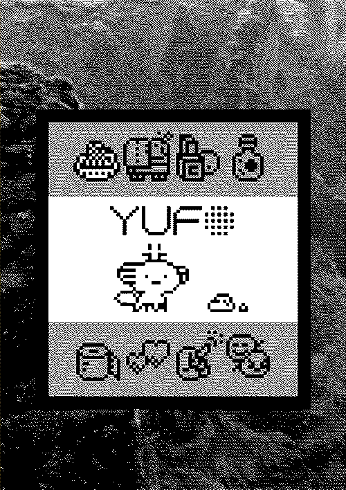
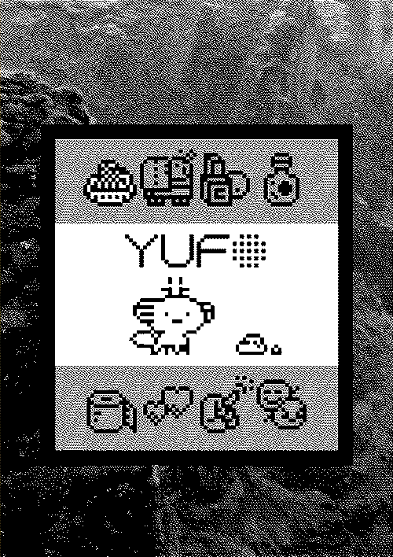
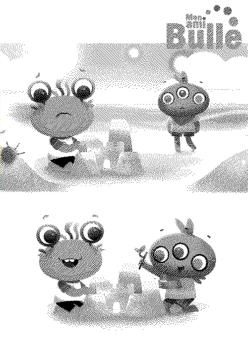
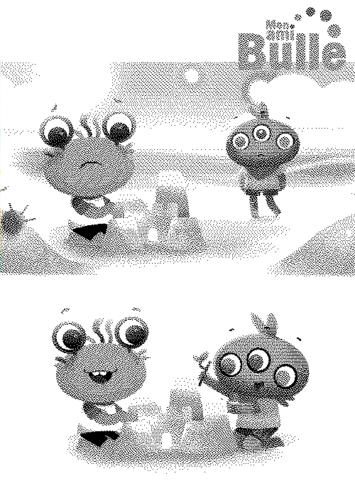

Games & Toys

 

- cat clock - an uxn cat clock.
- niju - a hiragana/katakana learning game.
- oquonie - a puzzle game.
- paradise - an interactive-fiction game.
- catpot - a hypercard game.
- hitobito - art series.
- incredible death - entry for screensaver jam.
- malisse - a game jam game.
- donsol - a card game.
- yufo - a tamagotchi-like game.
- markl - a fighting game.
Art series


- wunderland rabbits - rabbit photo travel log.
- hitobito - a person a day observation drawings.
- vancouver island mushrooms - ink drawing series of BC mushrooms.
- ginger roots - ink drawing series of ginger roots.
- fasciation - ink drawing series of fasciated plants.
- fungi - ink drawing series of fungi.
- knots - ink drawing series of boating knots.
- sprite - cartoony portraits.
- couple - couple portraits.
Other


- fsf talk - a person a day observation drawings.
- uxn asl - ink drawing series of BC mushrooms.
- uxn - a personal computing playground.
- grimgrains - a cooking blog.
Client work

 

- busy water - a learning game.
- vendredi 13 - a board game.
- bulle - a learning game for kids.
- misc - misc unreleased games.